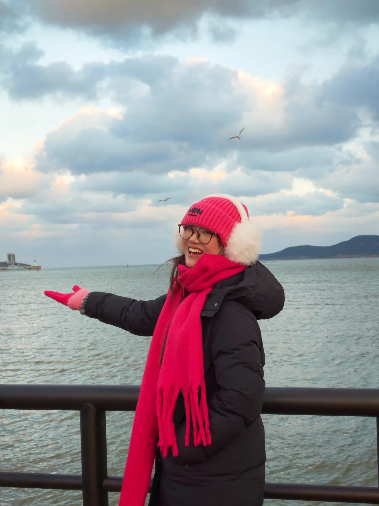
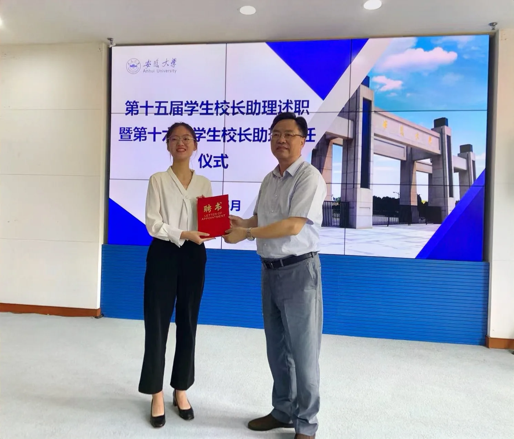
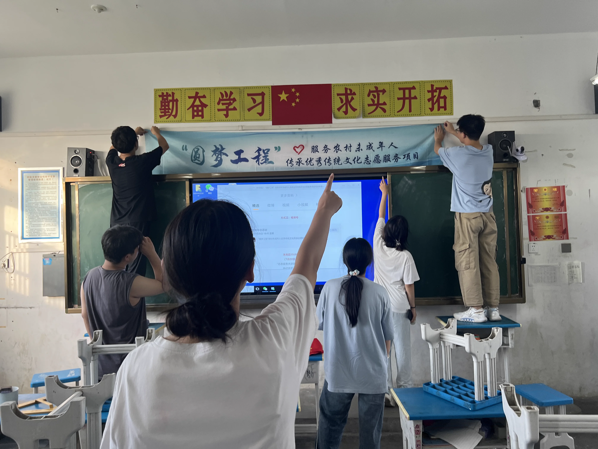
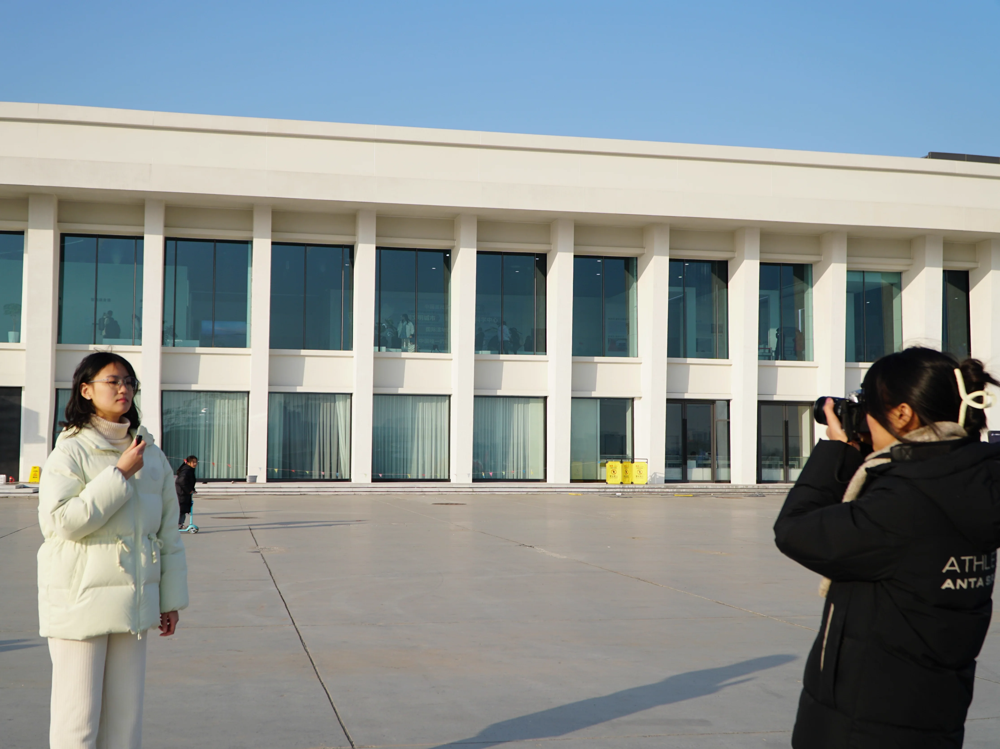
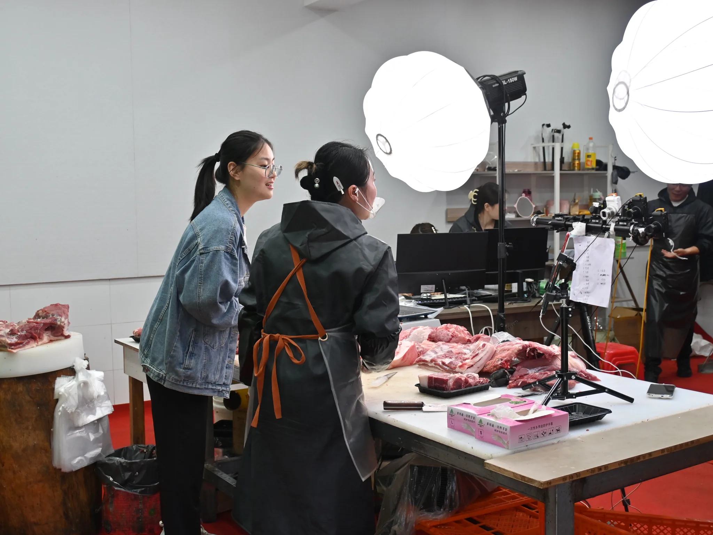

新闻传播学硕士研究生，获得学业二等奖学金。

坚韧平和
01 / 关于我
看见细节，
也看见联系。
新闻学本科，专业成绩前 10%，获得犀利奖学金、学业二等奖学金、社会实践奖学金，获得优秀毕业生称号。
我是一个皮实、靠谱、有条理的人。我擅长朗诵、演讲、主持等语言表演。

信息收集与整合
从人物、数据与现场中寻找线索，并建立信息之间的联系。
内容策划与表达
根据传播场景选择文字、影像、音频或互动形式。
从想法到执行
把模糊的构思推进为可落地的内容、活动和项目。
数据与用户视角
结合用户需求、传播数据与反馈判断内容效果。
沟通与协作
在不同对象与团队之间建立有效连接。
02 / 我的经历
走过的路，
成为表达的底稿。


在校园里学习表达与协作
从学生媒体的新闻采编，到公益项目、校务沟通与研究生会组织运营，积累内容生产与跨部门协作经验。
进入基层与田野现场
在基层行政、乡村志愿服务与新闻采风中，接触真实问题，并通过数据、沟通与采访推动工作。
让内容进入真实业务
在品牌传播、零售营销与广播新媒体岗位中，参与活动、内容、社群、直播和节目生产的完整流程。
03 / 我的作品
不同媒介，
同一种表达欲。


04 / 联系我
下一个故事，
从一句你好开始。
给故事一个开始。
联系我